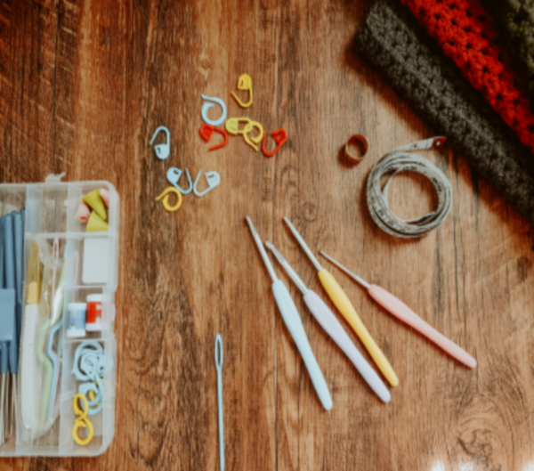

Crochet
Switching Up Your Crochet Game: Colour Play and Mosaic Crochet
Author: Ladele Simi
14th July, 2025

What Is Colour Play in Crochet?
Colour play refers to the creative use of colour combinations, contrast, and placement to elevate your crochet projects. It’s more than just picking your favourite hues it's about how colours interact with each other to create movement, depth, and emotion.
Tips for Mastering Colour Play: .
- Use the Colour Wheel.
- Consider Colour Value.
- Test Swatches First.
- Start Small

What Is Mosaic Crochet?
Mosaic crochet is a stunning colour work technique that looks complex but is surprisingly simple once you understand the basics. Using only one colour per row and working into previous rows, you can create intricate, geometric patterns with minimal fuss. .
Why Mosaic Crochet? .
- No Tangled Yarn.
- High Impact.
- Beginner Friendly.
- Perfect for Home Decor

Colour Play Meets Mosaic Crochet: A Match Made in Yarn Heaven
When you combine clever colour play with the structure of mosaic crochet, magic happens. The geometric lines of mosaic patterns give you a natural grid to experiment with contrast, gradients, or even subtle colour shifts.
.
Best Yarn Colours for Mosaic Crochet:
- High contrast.
- Muted tones.
- Gradient yarns

Getting Started: Tools and Resources
Materials You’ll Need: .
- Worsted or DK weight yarn in at least two contrasting colours.
- A comfortable crochet hook (usually 4mm5.5mm ) .
- Scissors, yarn needle, and stitch markers.
Free Mosaic Crochet Resources: .
- Tinna Thorudottir Thorvaldsdottirs Mosaic Tutorials.
- YouTube channels like TL Yarn Crafts, Daisy Farm Crafts.
- Ravelrys mosaic pattern section

Inspiration: Projects to Try
Looking to experiment? Try these beginner-friendly ideas: .
- Mosaic Coasters.
- Colourful Cushion Covers.
- Statement Scarves.
- Wall Art
Final Thoughts: Time to Switch Up Your Crochet Game!
If you’ve been feeling stuck in a crochet rut, diving into colour play and mosaic crochet can reignite your passion. These techniques are accessible, creative, and endlessly customizable. So grab your hooks, pick your palette, and start experimenting you might just surprise yourself.
.